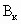
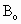
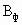
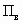
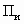
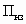
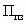
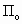

Зарегистрировано в Минюсте России 20 февраля 2015 г. N 36128
МИНИСТЕРСТВО ТРУДА И СОЦИАЛЬНОЙ ЗАЩИТЫ РОССИЙСКОЙ ФЕДЕРАЦИИ
ПРИКАЗ
от 5 декабря
2014 г. N 976н
(в ред. Приказа Минтруда России от 14.11.2016 N 642н)
ОБ УТВЕРЖДЕНИИ МЕТОДИКИ
СНИЖЕНИЯ КЛАССА (ПОДКЛАССА) УСЛОВИЙ ТРУДА ПРИ ПРИМЕНЕНИИ
РАБОТНИКАМИ, ЗАНЯТЫМИ НА РАБОЧИХ МЕСТАХ С ВРЕДНЫМИ
УСЛОВИЯМИ ТРУДА, ЭФФЕКТИВНЫХ СРЕДСТВ ИНДИВИДУАЛЬНОЙ
ЗАЩИТЫ, ПРОШЕДШИХ ОБЯЗАТЕЛЬНУЮ СЕРТИФИКАЦИЮ В ПОРЯДКЕ,
УСТАНОВЛЕННОМ СООТВЕТСТВУЮЩИМ ТЕХНИЧЕСКИМ РЕГЛАМЕНТОМ
В соответствии с частями 6 и 7 статьи 14 Федерального закона от 28 декабря 2013 г. N 426-ФЗ "О специальной оценке условий труда" (Собрание законодательства Российской Федерации, 2013, N 52, ст. 6991; 2014, N 26, ст. 3366) приказываю:
1. Утвердить по согласованию с Федеральной службой по надзору в сфере защиты прав потребителей и благополучия человека методику снижения класса (подкласса) условий труда при применении работниками, занятыми на рабочих местах с вредными условиями труда, эффективных средств индивидуальной защиты, прошедших обязательную сертификацию в порядке, установленном соответствующим техническим регламентом, согласно приложению.
2. Настоящий приказ вступает в силу по истечении трех месяцев со дня его официального опубликования.
Министр
М.А.ТОПИЛИН
к приказу Министерства труда
и социальной защиты
Российской Федерации
от 5 декабря 2014
г. N 976н
(в ред. Приказа Минтруда России
от 14.11.2016 N 642н)
СНИЖЕНИЯ КЛАССА (ПОДКЛАССА) УСЛОВИЙ ТРУДА ПРИ ПРИМЕНЕНИИ
РАБОТНИКАМИ, ЗАНЯТЫМИ НА РАБОЧИХ МЕСТАХ С ВРЕДНЫМИ
УСЛОВИЯМИ ТРУДА, ЭФФЕКТИВНЫХ СРЕДСТВ ИНДИВИДУАЛЬНОЙ
ЗАЩИТЫ, ПРОШЕДШИХ ОБЯЗАТЕЛЬНУЮ СЕРТИФИКАЦИЮ В ПОРЯДКЕ,
УСТАНОВЛЕННОМ СООТВЕТСТВУЮЩИМ ТЕХНИЧЕСКИМ РЕГЛАМЕНТОМ
1. Настоящая методика устанавливает требования к процедурам оценки эффективности применяемых работниками, занятыми на рабочих местах с вредными условиями труда, средств индивидуальной защиты, прошедших обязательную сертификацию в порядке, установленном техническим регламентом Таможенного союза "О безопасности средств индивидуальной защиты" (ТР ТС 019/2011) <1> (далее соответственно - СИЗ, технический регламент, оценка эффективности), и снижения класса (подкласса) условий труда при применении отдельных видов эффективных СИЗ.
--------------------------------
<1> Утвержден решением Комиссии Таможенного союза от 9 декабря 2011 г. N 878 (официальный сайт Комиссии Таможенного союза http://www.tsouz.ru/, 15.12.2011), с изменениями, внесенными решением Коллегии Евразийской экономической комиссии от 13 ноября 2012 г. N 221 (официальный сайт Евразийской экономической комиссии http://www.tsouz.ru/, 20.11.2012).
2. Настоящая методика не применяется в отношении:
1) СИЗ работников, занятых на рабочих местах, условия труда на которых по результатам специальной оценки условий труда отнесены к опасным условиям труда;
2) СИЗ работников, занятых на рабочих местах, условия труда на которых по результатам специальной оценки условий труда отнесены к оптимальным или допустимым условиям труда;
3) СИЗ для защиты от общих производственных загрязнений;
4) СИЗ, подлежащих декларированию;
5) СИЗ, подлежащих сертификации и указанных в пунктах 5, 7, 12, 19 - 27, 32 - 37, 40 - 42 приложения N 4 к техническому регламенту.
3. Снижение класса (подкласса) условий труда при применении эффективных СИЗ осуществляется в ходе проведения в установленном порядке специальной оценки условий труда путем последовательной реализации следующих процедур:
1) оценка соответствия наименования СИЗ и нормы их выдачи наименованиям СИЗ и нормам их выдачи, предусмотренным типовыми нормами бесплатной выдачи работникам сертифицированных специальной одежды, специальной обуви и других средств индивидуальной защиты (далее - типовые нормы);
2) оценка наличия документов, подтверждающих соответствие СИЗ требованиям технического регламента;
3) оценка наличия эксплуатационной документации и маркировки СИЗ, соответствующих требованиям технического регламента, комплектности СИЗ;
4) оценка эффективности выбора СИЗ;
5) оценка эффективности применения СИЗ.
4. Реализация процедур, указанных в пункте 3 настоящей методики, осуществляется экспертом организации, проводящей специальную оценку условий труда (далее - эксперт), в отношении каждого работника, занятого на рабочем месте (рабочих местах).
На рабочих местах, признанных в ходе проведения специальной оценки условий труда аналогичными рабочими местами, реализация процедур, указанных в пункте 3 настоящей методики, осуществляется экспертом в отношении каждого работника, занятого на каждом аналогичном рабочем месте.
II. Оценка соответствия наименования СИЗ и нормы их выдачи
наименованиям СИЗ и нормам их выдачи, предусмотренным
типовыми нормами
5. Оценка соответствия наименования СИЗ и нормы их выдачи наименованиям СИЗ и нормам их выдачи, предусмотренным типовыми нормами, осуществляется путем сравнения наименований и количества фактически выданных работнику СИЗ в соответствии с записями в его личной карточке учета выдачи СИЗ с наименованиями СИЗ и нормами их выдачи, предусмотренными для работника соответствующей профессии (должности) типовыми нормами, а также с учетом Межотраслевых правил обеспечения работников специальной одеждой, специальной обувью и другими средствами индивидуальной защиты <1>.
--------------------------------
<1> Утверждены приказом Минздравсоцразвития России от 1 июня 2009 г. N 290н "Об утверждении Межотраслевых правил обеспечения работников специальной одеждой, специальной обувью и другими средствами индивидуальной защиты" (зарегистрирован Минюстом России 10 сентября 2009 г. N 14742), с изменениями, внесенными приказом Минздравсоцразвития России от 27 января 2010 г. N 28н (зарегистрирован Минюстом России 1 марта 2010 г. N 16530) и приказом Минтруда России от 20 февраля 2014 г. N 103н (зарегистрирован Минюстом России 15 мая 2014 г. N 32284).
6. По результатам указанного в пункте 5 настоящей методики сравнения экспертом делается заключение о соответствии либо несоответствии наименований и количества фактически выданных работнику СИЗ наименованиям СИЗ и нормам их выдачи, предусмотренным типовыми нормами.
В случае несоответствия наименований и количества фактически выданных работнику СИЗ наименованиям СИЗ и нормам их выдачи, предусмотренным типовыми нормами, снижение класса (подкласса) условий труда не допускается, экспертом делается заключение о невозможности снижения класса (подкласса) условий труда.
III. Оценка наличия документов, подтверждающих соответствие
СИЗ требованиям технического регламента
7. В качестве документа, подтверждающего соответствие СИЗ требованиям технического регламента, используется действующий сертификат соответствия, выданный аккредитованным органом по сертификации, включенным в Единый реестр органов по сертификации и испытательных лабораторий (центров) Таможенного союза.
8. По результатам оценки наличия документов, подтверждающих соответствие СИЗ требованиям технического регламента, экспертом делается заключение о наличии действующего сертификата соответствия, выданного аккредитованным органом по сертификации, включенным в Единый реестр органов по сертификации и испытательных лабораторий (центров) Таможенного союза, либо о его отсутствии.
В случае применения работником отдельных видов СИЗ, подлежащих в соответствии с требованиями технического регламента обязательной сертификации, в отношении которых отсутствует сертификат соответствия, выданный аккредитованным органом по сертификации, включенным в Единый реестр органов по сертификации и испытательных лабораторий (центров) Таможенного союза, снижение класса (подкласса) условий труда не допускается, экспертом делается заключение о невозможности снижения класса (подкласса) условий труда.
IV. Оценка наличия эксплуатационной документации
и маркировки СИЗ, соответствующих требованиям технического
регламента, комплектности СИЗ
9. Оценка наличия эксплуатационной документации и маркировки СИЗ, соответствующих требованиям технического регламента, комплектности СИЗ проводится экспертом путем изучения:
1) эксплуатационной документации СИЗ;
2) маркировки СИЗ;
3) комплектности СИЗ (для СИЗ сложной конструкции).
10. По результатам изучения эксплуатационной документации СИЗ, маркировки СИЗ и комплектности СИЗ (для СИЗ сложной конструкции) экспертом делается заключение о наличии эксплуатационной документации и маркировки СИЗ, соответствующих требованиям технического регламента, либо об их отсутствии, и о соответствии комплектности СИЗ (для СИЗ сложной конструкции) эксплуатационной документации.
В случаях отсутствия эксплуатационной документации или маркировки СИЗ, соответствующих требованиям технического регламента, а также ненадлежащей комплектности СИЗ (для СИЗ сложной конструкции) снижение класса (подкласса) условий труда не допускается, экспертом делается заключение о невозможности снижения класса (подкласса) условий труда.
V. Оценка эффективности выбора СИЗ
11. Оценка эффективности выбора СИЗ реализуется путем последовательного определения:
1)
показателя соответствия СИЗ, выданных работнику, перечню вредных
производственных факторов на рабочем месте, выявленных в ходе проведения
специальной оценки условий труда (далее - показатель  );
);
2) показателя соответствия защитных свойств СИЗ, выданных
работнику, фактическим уровням вредных производственных факторов, установленным
в ходе проведения специальной оценки условий труда (далее - показатель 
3) показателя, оценивающего потребительские свойства СИЗ, выданных работнику (удобство применения и качество прилегания) (далее - показатель ) (только в отношении средств индивидуальной защиты органов дыхания (далее - СИЗОД) фильтрующего типа);
4) показателя соответствия защитных свойств СИЗ, выданных
работнику, фактическим уровням вредных производственных факторов, установленным
в ходе проведения специальной оценки условий труда и характерным для отдельных
видов экономической деятельности (далее - показатель 
12. Показатель 
--------------------------------
<1> Форма карты специальной оценки условий труда работников приведена в разделе III отчета о проведении специальной оценки условий труда, форма которого утверждена приказом Минтруда России от 24 января 2014 г. N 33н (зарегистрирован Минюстом России 21 марта 2014 г. N 31689).
<2> Приложение к Межотраслевым правилам обеспечения работников специальной одеждой, специальной обувью и другими средствами индивидуальной защиты, утвержденным приказом Минздравсоцразвития России от 1 июня 2009 г. N 290н (зарегистрирован Минюстом России 10 сентября 2009 г. N 14742), с изменениями, внесенными приказом Минздравсоцразвития России от 27 января 2010 г. N 28н (зарегистрирован Минюстом России 1 марта 2010 г. N 16530) и приказом Минтруда России от 20 февраля 2014 г. N 103н (зарегистрирован Минюстом России 15 мая 2014 г. N 32284).
13. Оценка соответствия выданных работнику СИЗ перечню вредных производственных факторов признается положительной, если работник обеспечен СИЗ от всех вредных производственных факторов, отнесенных в ходе проведения специальной оценки условий труда на его рабочем месте к вредному классу условий труда.
14. Оценка соответствия выданных работнику СИЗ перечню вредных производственных факторов признается отрицательной, если работник не обеспечен СИЗ хотя бы от одного вредного производственного фактора из числа вредных производственных факторов, которые идентифицированы на его рабочем месте.
15. Показатель определяется на основе оценки соответствия показателей, учитывающих защитные свойства СИЗ, классу (подклассу) условий труда на рабочем месте, установленному в ходе проведения специальной оценки условий труда для соответствующих вредных производственных факторов, защиту от которых обеспечивает СИЗ, отраженных в строке 030 Карты специальной оценки условий труда.
16. Оценка показателя признается положительной, если работник обеспечен СИЗ, соответствующим классу (подклассу) условий труда имеющегося на его рабочем месте вредного производственного фактора, установленного в ходе проведения специальной оценки условий труда.
17. Если работник не обеспечен СИЗ, соответствующим классу (подклассу) условий труда имеющегося на его рабочем месте вредного производственного фактора, установленного в ходе проведения специальной оценки условий труда, оценка показателя признается отрицательной.
18. Сведения о защитных свойствах СИЗ устанавливаются экспертом путем изучения эксплуатационной документации СИЗ и иных документов производителя СИЗ.
19. Показатель определяется в отношении СИЗОД фильтрующего типа путем:
качественной оценки плотности прилегания СИЗОД фильтрующего типа, осуществляемой в соответствии со стандартами безопасности труда;
комплексной оценки удобства применения СИЗОД фильтрующего типа на основе анкетирования работников.
20. Качественная оценка плотности прилегания СИЗОД фильтрующего типа осуществляется методом проверки плотности прилегания лицевой части отрицательным или положительным давлением.
В случае обнаружения подсоса воздуха по полосе обтюрации при качественной оценке плотности прилегания СИЗОД фильтрующего типа методом проверки плотности прилегания лицевой части отрицательным давлением или наблюдения выхода воздуха из-под лицевой части по полосе обтюрации при качественной оценке плотности прилегания СИЗОД фильтрующего типа методом проверки плотности прилегания лицевой части положительным давлением, качественная оценка плотности прилегания СИЗОД фильтрующего типа признается отрицательной, в противном случае - положительной.
21. Анкетирование работников проводится экспертом с участием уполномоченного должностного лица работодателя и представителя профсоюзного или иного представительного органа работников в соответствии с анкетой (рекомендуемый образец приведен в приложении к настоящей методике).
22. По результатам анкетирования работников каждому ответу присваивается следующее количество баллов:
"не могу использовать" - 1 балл;
"плохо" - 2 балла;
"удовлетворительно" - 3 балла;
"хорошо" - 4 балла;
"очень хорошо" - 5 баллов.
23. С учетом суммарного количества баллов по результатам анкетирования работников показателю присваиваются следующие оценки:
"очень удобно" - количество баллов от 63 до 70;
"удобно" - количество баллов от 49 до 62;
"удовлетворительно" - количество баллов от 35 до 48;
"неудобно" - количество баллов от 21 до 34;
"непереносимо" - количество баллов от 14 до 20.
24. Оценка показателя признается положительной, если результат качественной оценки плотности прилегания СИЗОД фильтрующего типа является положительным, а по результатам анкетирования показателю присвоены оценки "очень удобно" и "удобно", в случае если результат качественной оценки плотности прилегания СИЗОД фильтрующего типа признан отрицательным и/или по результатам анкетирования показателю присвоены оценки "удовлетворительно", "неудобно", "непереносимо", оценка показателя признается отрицательной.
25. Показатель определяется в соответствии со стандартами оценки эффективности использования СИЗ по соответствующему виду экономической деятельности (при их наличии).
Для случаев, когда стандарты оценки эффективности использования СИЗ по соответствующему виду экономической деятельности отсутствуют, могут применяться соответствующие стандарты организаций, содержащие перечень технических требований к СИЗ работников конкретной организации.
VI. Оценка эффективности применения СИЗ
26. Процедура оценки эффективности применения СИЗ реализуется путем определения следующих показателей:
1) показателя, оценивающего соответствие времени использования СИЗ
сроку гарантированного сохранения защитных свойств СИЗ при соответствующем
хранении и уходе, указанному в эксплуатационной документации СИЗ или иных
документах производителя, и записям в личной карточке учета выдачи СИЗ
работнику (далее - показатель 
2)
показателя, оценивающего наличие своевременного проведения проверки исправности
(испытания) СИЗ согласно нормативным документам, а также рекомендациям
производителей СИЗ (далее - показатель 
--------------------------------
<1> Данный показатель определяется в случае наличия национальных стандартов, устанавливающих сроки испытаний и проверки исправности СИЗ.
3) показателя, оценивающего наличие неснижаемого запаса СИЗ,
достаточного для обеспечения работников, занятых во вредных условиях труда, в
течение не менее одного месяца, наличие мест хранения, ремонта, восстановления
защитных свойств, дегазации, дезактивации и дезинфекции СИЗ, либо
гражданско-правового договора на оказание соответствующих услуг (далее -
показатель 
4)
показателя, оценивающего проведение инструктажа работников о правилах
применения СИЗ на рабочих местах с учетом особенностей технологических
процессов, о простейших способах проверки их работоспособности и исправности, а
также организации тренировки по их применению (далее - показатель  );
);
5)
показателя, оценивающего наличие выявленных профессиональных заболеваний у
работников, связанных с неправильным применением или неприменением СИЗ на
конкретном рабочем месте (далее - показатель 
27. Показатель определяется путем сравнения временных характеристик (срока годности СИЗ, срока эксплуатации СИЗ), отраженных в эксплуатационной документации СИЗ, со сроками выдачи СИЗ, указанными в личной карточке учета выдачи СИЗ работнику.
В случае, если в период действия результатов специальной оценки условий труда, в ходе которой проводилась оценка эффективности применения СИЗ, срок годности или эксплуатации таких СИЗ истек, работодатель обязуется предоставить работнику СИЗ, аналогичные СИЗ, оценка которых была проведена, либо СИЗ с более высокими защитными свойствами.
28. Оценка показателя признается положительной, если время гарантированного сохранения защитных свойств СИЗ при соответствующем хранении и уходе превышает или совпадает со временем носки СИЗ.
В случае если время носки СИЗ превышает время гарантированного сохранения защитных свойств СИЗ при соответствующем хранении и уходе, оценка показателя признается отрицательной.
29. Показатель определяется на основе оценки наличия протоколов испытаний и проверки СИЗ (отметка, клеймо, штамп).
30. Оценка показателя признается положительной, если имеются соответствующие протоколы испытаний и проверок СИЗ (отметка, клеймо, штамп).
В противном случае оценка показателя признается отрицательной.
31. Показатель  определяется
на основе оценки наличия неснижаемого запаса СИЗ, достаточного для обеспечения
работников, занятых во вредных условиях труда, в течение не менее одного
месяца, наличия мест хранения, ремонта, восстановления защитных свойств,
дегазации, дезактивации и дезинфекции СИЗ, либо гражданско-правового договора
на оказание соответствующих услуг.
определяется
на основе оценки наличия неснижаемого запаса СИЗ, достаточного для обеспечения
работников, занятых во вредных условиях труда, в течение не менее одного
месяца, наличия мест хранения, ремонта, восстановления защитных свойств,
дегазации, дезактивации и дезинфекции СИЗ, либо гражданско-правового договора
на оказание соответствующих услуг.
32.
Оценка показателя  признается положительной, если
имеются указанные в пункте 31 настоящей методики неснижаемый запас СИЗ, места
хранения, ремонта, восстановления защитных свойств, дегазации, дезактивации и
дезинфекции СИЗ либо гражданско-правовой договор на
оказание соответствующих услуг.
признается положительной, если
имеются указанные в пункте 31 настоящей методики неснижаемый запас СИЗ, места
хранения, ремонта, восстановления защитных свойств, дегазации, дезактивации и
дезинфекции СИЗ либо гражданско-правовой договор на
оказание соответствующих услуг.
В противном случае оценка показателя признается отрицательной.
33.
Показатель  определяется путем проверки
наличия и реализации процедур инструктажа работников о правилах применения СИЗ
на рабочих местах с учетом особенностей технологических процессов, о простейших
способах проверки их работоспособности и исправности, а также организации
тренировки по их применению.
определяется путем проверки
наличия и реализации процедур инструктажа работников о правилах применения СИЗ
на рабочих местах с учетом особенностей технологических процессов, о простейших
способах проверки их работоспособности и исправности, а также организации
тренировки по их применению.
34.
Оценка показателя  признается положительной, если
в организации проводится инструктаж работников о правилах
применения СИЗ на рабочих местах с учетом особенностей технологических
процессов, о простейших способах проверки их работоспособности и исправности, а
также организованы тренировки по их применению.
признается положительной, если
в организации проводится инструктаж работников о правилах
применения СИЗ на рабочих местах с учетом особенностей технологических
процессов, о простейших способах проверки их работоспособности и исправности, а
также организованы тренировки по их применению.
В
противном случае оценка показателя  признается
отрицательной.
признается
отрицательной.
35. Показатель определяется путем анализа актов о расследовании профессиональных заболеваний работников, выявленных в предшествующем оценке эффективности применения пятилетнем периоде и связанных с неправильным применением или неприменением СИЗ на конкретном рабочем месте.
36. При отсутствии случаев профессиональных заболеваний у работников, связанных с неправильным применением или неприменением ими СИЗ на конкретном рабочем месте, оценка показателя признается положительной.
В противном случае оценка показателя признается отрицательной.
VII. Комплексная оценка эффективности СИЗ
37. Комплексная оценка эффективности СИЗ
проводится на основе балльной оценки каждого из показателей эффективности выбора
и применения СИЗ (, ,  ,
и
,
и  , ,
, ,
 ,
,  )
с учетом их удельных весов <1>.
)
с учетом их удельных весов <1>.
--------------------------------
<1> При определении балльной оценки показателей
эффективности выбора СИЗ их удельные веса распределяются следующим образом:  =
0,3, = 0,5, =
0,2; в случае отсутствия стандартов оценки эффективности использования СИЗ по
соответствующему виду экономической деятельности (в организации):
=
0,3, = 0,5, =
0,2; в случае отсутствия стандартов оценки эффективности использования СИЗ по
соответствующему виду экономической деятельности (в организации):  =
0,5, = 0,5.
=
0,5, = 0,5.
При
определении балльной оценки показателей эффективности выбора СИЗОД фильтрующего
типа их удельные веса распределяются следующим образом:  =
0,3, = 0,5, =
0,1, = 0,1; в случае отсутствия стандартов оценки эффективности использования СИЗ
по соответствующему виду экономической деятельности (в организации):
=
0,3, = 0,5, =
0,1, = 0,1; в случае отсутствия стандартов оценки эффективности использования СИЗ
по соответствующему виду экономической деятельности (в организации):  =
0,35, = 0,50, =
0,15.
=
0,35, = 0,50, =
0,15.
При
определении балльной оценки показателей эффективности применения СИЗ их удельные веса распределяются следующим образом: =
0,25, = 0,25, =
0,20,  = 0,15, =
0,15.
= 0,15, =
0,15.
38. Балльная оценка по каждому показателю эффективности выбора и применения СИЗ, указанного в пункте 37 настоящей методики, определяется по формуле (1):
Б = В x Р, (1)
где:
Б - балльная оценка по показателю (в баллах);
В - удельный вес показателя;
Р - результат оценки показателя (Р = 1 баллу, если оценка показателя положительная, Р = 0 баллов, если оценка показателя отрицательная).
Если оценка показателя положительная, то значение балльной оценки по показателю (Б) будет соответствовать значению его удельного веса (В), если отрицательная - то равна нулю.
39. Общая балльная оценка по показателям эффективности выбора и применения СИЗ определяется раздельно посредством суммирования балльных оценок по показателям эффективности выбора и применения СИЗ соответственно.
40. Итоговая балльная оценка по показателям эффективности выбора и применения СИЗ определяется по формуле (2):
С = ОВ x ОБ, (2)
где:
С - итоговая балльная оценка по показателям эффективности выбора и применения СИЗ соответственно (в баллах);
ОВ - удельный вес показателей эффективности выбора и применения СИЗ соответственно <1>;
--------------------------------
<1> При определении итоговой балльной оценки по показателям эффективности выбора и применения СИЗ их удельные веса распределяются следующим образом: показатель эффективности выбора СИЗ = 0,5, показатель эффективности применения СИЗ = 0,5.
ОБ - общая балльная оценка по показателям эффективности выбора и применения СИЗ соответственно.
41. Комплексная оценка эффективности СИЗ определяется путем сложения значений итоговых балльных оценок по показателям эффективности выбора и применения СИЗ соответственно.
VIII. Оформление результатов оценки эффективности СИЗ
42. По результатам оценки эффективности СИЗ экспертом оформляется протокол оценки эффективности применяемых работниками, занятыми на рабочих местах с вредными условиями труда, средств индивидуальной защиты, прошедших обязательную сертификацию в порядке, установленном техническим регламентом, в целях снижения класса (подкласса) условий труда (далее - протокол), в котором указываются:
(в ред. Приказа Минтруда России от 14.11.2016 N 642н)
а) идентификационный номер протокола;
б) дата проведения оценки эффективности СИЗ;
в) полное наименование работодателя и его подразделения, в отношении СИЗ работников которого проводилась оценка эффективности;
г) индивидуальный номер рабочего места работника, в отношении СИЗ которого проводилась оценка эффективности;
д) фамилия, имя, отчество работника, в отношении СИЗ которого проводилась оценка эффективности;
е) страховой номер индивидуального лицевого счета работника, в отношении СИЗ которого проводилась оценка эффективности;
ж) код профессии работника, в отношении СИЗ которого проводилась оценка эффективности, в соответствии с Общероссийским классификатором профессий рабочих, должностей служащих и тарифных разрядов;
з) вид и наименование СИЗ, в отношении которого проводилась оценка эффективности;
и) наименование организации, проводившей специальную оценку условий труда;
к) результаты оценки соответствия наименования СИЗ и нормы их выдачи (соответствует/не соответствует) наименованиям СИЗ и нормам их выдачи, предусмотренным типовыми нормами бесплатной выдачи работникам сертифицированных специальной одежды, специальной обуви и других средств индивидуальной защиты, с указанием наименования данных типовых норм;
л) результаты оценки наличия документов, подтверждающих соответствие СИЗ требованиям технического регламента (наличие/отсутствие, номер и дата выдачи сертификата соответствия, наименование органа по сертификации);
м) результаты оценки наличия эксплуатационной документации и маркировки СИЗ, соответствующих требованиям технического регламента (наличие/отсутствие);
н) результаты оценки комплектности СИЗ (соответствует/не соответствует эксплуатационной документации СИЗ);
о) результаты балльной и общей балльной оценки по показателям эффективности выбора и применения СИЗ в соответствии с пунктом 38 настоящей методики;
п) результаты итоговой балльной оценки по показателям эффективности выбора и применения СИЗ в соответствии с пунктом 40 настоящей методики;
р) результаты комплексной оценки эффективности СИЗ в соответствии с пунктом 41 настоящей методики;
с) заключение эксперта об исправности (неисправности) средств коллективной защиты, применяемых на рабочем месте работника, в отношении СИЗ которого проводилась оценка эффективности;
т) заключение эксперта о возможности снижения класса (подкласса) условий труда для вредного производственного фактора.
43. Протокол подписывается экспертом, его составившим.
IX. Снижение класса (подкласса) условий труда
при применении работниками, занятыми на рабочих местах
с вредными условиями труда, эффективных СИЗ
44. Снижение класса (подкласса) условий труда осуществляется в отношении вредного производственного фактора, для защиты от которого применяется оцениваемый СИЗ, и допускается на одну степень в случае если:
1) условия труда на рабочем месте в ходе проведения специальной оценки условий труда отнесены к вредным условиям труда 2 - 4 степени;
2) полностью реализованы процедуры, указанные в подпунктах 1 - 3 пункта 3 настоящей методики;
3) значение комплексной оценки эффективности СИЗ больше или равно 0,9 балла;
4) для защиты от воздействия вредного производственного фактора, в отношении которого осуществляется снижение класса (подкласса) условий труда, работником используется не более чем один вид СИЗ, прошедший обязательную сертификацию в порядке, установленном техническим регламентом;
5) на соответствующих рабочих местах применяются исправные средства коллективной защиты работников <1>.
--------------------------------
<1> Решение об исправности (неисправности)
средств коллективной защиты принимается экспертом по результатам изучения им
эксплуатационной документации на такие средства, а также проведения их
визуального осмотра в штатном рабочем режиме.
45. Снижение класса (подкласса) условий труда осуществляется в отношении вредного производственного фактора, для защиты от которого применяется оцениваемый СИЗ, и допускается более чем на одну степень в случае если:
1) условия труда на рабочем месте в ходе специальной оценки условий труда отнесены к вредным условиям труда 3 - 4 степени;
2) полностью реализованы процедуры, указанные в подпунктах 1 - 3 пункта 3 настоящей методики;
3) значение комплексной оценки эффективности СИЗ равно 1 баллу;
4) для защиты от воздействия вредного производственного фактора, в отношении которого осуществляется снижение класса (подкласса) условий труда, работником используется не более чем один вид СИЗ, прошедший обязательную сертификацию в порядке, установленном техническим регламентом;
5) на соответствующих рабочих местах применяются исправные средства коллективной защиты работников <1>;
--------------------------------
<1> Решение об исправности (неисправности)
средств коллективной защиты принимается экспертом по результатам изучения им
эксплуатационной документации на такие средства, а также проведения их
визуального осмотра в штатном рабочем режиме.
6) имеется согласование федерального органа исполнительной власти, осуществляющего функции по организации и осуществлению федерального государственного санитарно-эпидемиологического надзора.
(в ред. Приказа Минтруда России от 14.11.2016 N 642н)
46. В случае если на рабочем месте занято несколько работников, снижение класса (подкласса) условий труда допускается при соблюдении условий снижения класса (подкласса) условий труда, указанных в пунктах 44 и 45 настоящей методики, в отношении каждого работника.
47. Решение о снижении класса (подкласса) условий труда в отношении условий труда на соответствующем рабочем месте принимается комиссией по проведению специальной оценки условий труда на основании заключения эксперта, указанного в подпункте т) пункта 42 настоящей методики.
При этом не допускается снижение класса (подкласса) условий труда ниже подкласса 3.1 вредных условий труда.
к методике снижения класса
(подкласса) условий труда
при применении работниками,
занятыми на рабочих местах
с вредными условиями труда,
эффективных средств
индивидуальной защиты,
прошедших обязательную
сертификацию в порядке,
установленном соответствующим
техническим регламентом,
утвержденной приказом
Министерства труда
и социальной защиты
Российской Федерации
от 5 декабря 2014 г. N 976н
Рекомендуемый образец
для определения удобства применения средств индивидуальной
защиты органов дыхания фильтрующего типа
___________________________________________________________
(подразделение, номер рабочего места, фамилия, имя,
отчество (при наличии), страховой номер индивидуального
лицевого счета, специальность, профессия, должность
работника, занятого на рабочем месте)
|
Содержание вопроса, характеризующего параметры средств индивидуальной защиты органов дыхания фильтрующего типа |
Варианты ответов |
||||
|
"Не могу использовать" |
"Плохо" |
"Удовлетворительно" |
"Хорошо" |
"Очень хорошо" |
|
|
Удобство носки |
|
|
|
|
|
|
Легкость дыхания |
|
|
|
|
|
|
Влияние образующейся в подмасочном пространстве влаги |
|
|
|
|
|
|
Влияние имеющейся в подмасочном пространстве повышенной температуры |
|
|
|
|
|
|
Качество прилегания маски на подбородке <1> |
|
|
|
|
|
|
Качество прилегания маски к лицу около носа <1> |
|
|
|
|
|
|
Соответствие маски в области щек <1> |
|
|
|
|
|
|
Степень ограничения поля зрения |
|
|
|
|
|
|
Совместимость со средством индивидуальной защиты глаз |
|
|
|
|
|
|
Надежность фиксации маски на лице |
|
|
|
|
|
|
Устойчивость формы маски |
|
|
|
|
|
|
Образование наминов, нарушения целостности поверхностных слоев кожи <2> |
|
|
|
|
|
|
Возможность осуществлять коммуникацию (разговаривать) |
|
|
|
|
|
|
Удобство хранения |
|
|
|
|
|
--------------------------------
<1> Оценивается путем визуальной проверки с использованием зеркала.
<2> Механическое воздействие средства индивидуальной защиты органов дыхания фильтрующего типа в течение 6 часов либо в течение времени его непрерывного применения, указанного в эксплуатационной документации, не должно вызывать наминов 3-й степени (синюшной окраски кожи с резко очерченными краями, сохраняющейся более 20 минут после прекращения воздействия), нарушений целостности поверхностных слоев кожи (ссадин, потертостей).